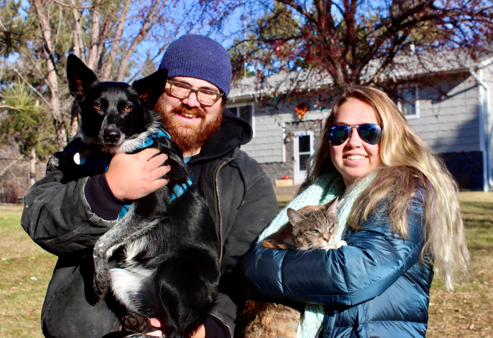
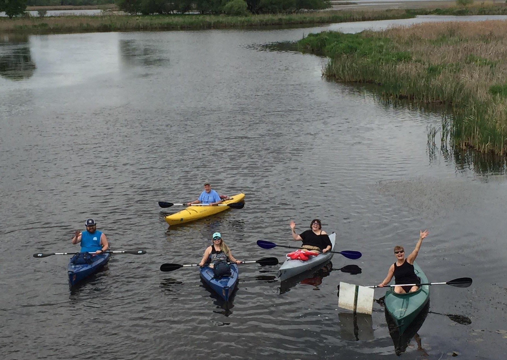
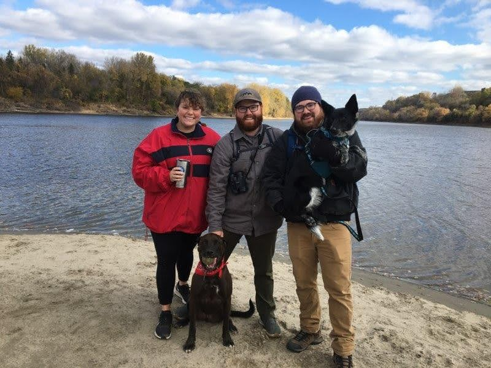

About me
Personal Life
I live in Columbus,MN with my girlfriend. We have a dog named ChiChi and a cat named Maisy. I enjoy spending time outdoors by hiking, exploring, and camping when we can. My love for outdoors comes from my years as a Boy Scout where I attained the rank of Eagle Scout.
Work Experience
In high school I got my first job as a Lifeguard at the Shoreview Community Center. When I was old enough I got a job as a beach lifeguard for Ramsey County during the summer months. In the off seasons I continued to work as a lifeguard and eventually was promoted to a supervisor for both the SCC and RC. As a supervisor I had more responsibity such as scheduling, running on-going training sessions, and teaching swim lessons toa variety of ages. After 7 years at the SCC and 5 years with Ramsey County I took a position at Securian Financial as a vendor clerk in the Accounts Payable department. This is where I am currently employed.
Images
  My projects
This Portfolio!
Wow what a cool thing you made.
Box Changer
Wow what a cool thing you made.
Contact
Use email or git hub
Github
Use email or git hub
Use email or git hub